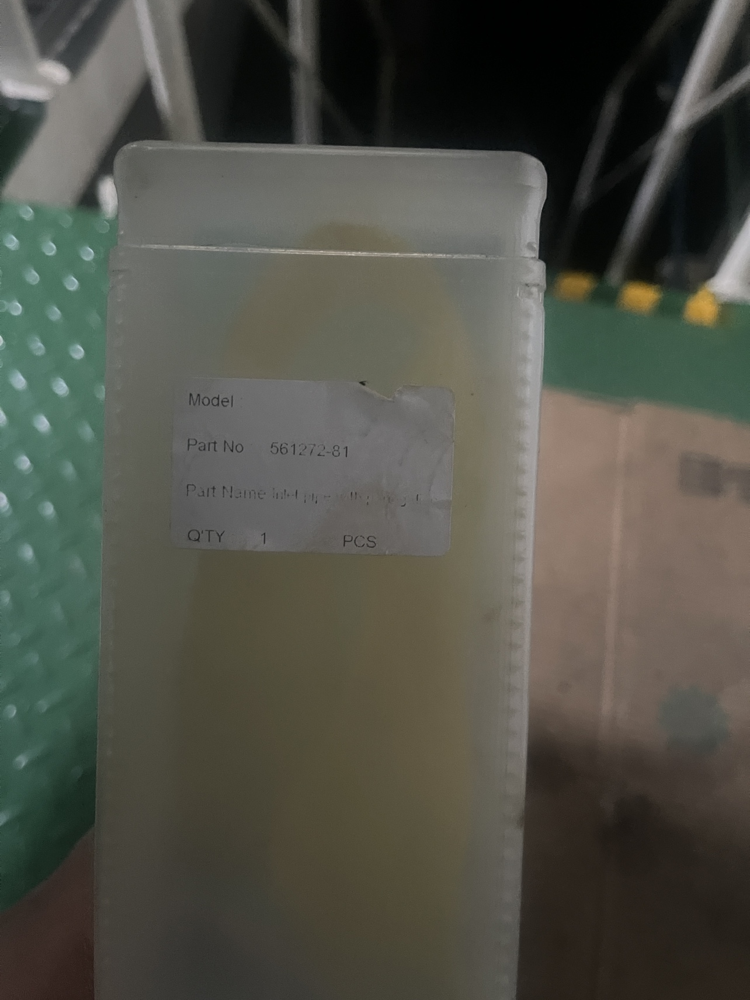
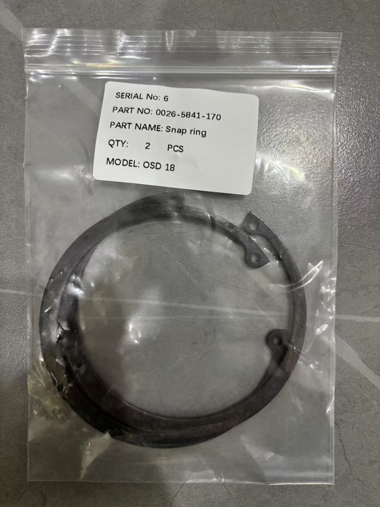

Alfa Laval & GEA Separator Wear Parts List with Part Numbers
Why Scheduled Parts Replacement Matters
Separators are continuous-running, high-speed machines (bowl speeds of 5,000-9,000 RPM). O-rings, seal rings, friction elements, and bearings continuously wear in hot, high-speed, oil-water alternating environments. Consequences of missing replacement intervals: oil-water interface failure and oil loss, sludge port seal failure, friction coupling slipping and burnout, bearing seizure and bowl lock-up.
Both Alfa Laval and GEA package wear parts into Service Kits executed by operating hours:
| Service Level | Alfa Laval | GEA Westfalia | Content |
|---|---|---|---|
| Intermediate | Intermediate Service (2000h/3 months) | bowl/hood kit (8000h/1 year) | Bowl and inlet/outlet O-rings, seal rings |
| Major | Major Service (8000h/12 months) | drive kit (8000h/1 year) | Drive system: friction elements, belt, bearings |
| 3-Year | 3-Years Service Kit | drive kit (16000h/2 years) | Friction coupling bearings, frame feet, etc. |
Important: Part numbers correspond one-to-one with machine model and Machine Unit Number. This article lists official part numbers using Alfa Laval P615 and GEA OSD series as examples. Other models (P605, S815, S821, OSD18, OSC30, etc.) have different part numbers. Always verify against the nameplate and spare parts catalogue before ordering.
Alfa Laval P615 Wear Parts
The following part numbers come from the official Alfa Laval P615 Spare Parts Catalogue, ready for direct ordering.
1. Intermediate Service Kit
Kit number: 546669- (suffix selected by machine unit number)
Interval: Every 2,000 operating hours or 3 months, whichever comes first.
| Ref | Part No | Description | Qty | Location |
|---|---|---|---|---|
| 1 | 22340629 | O-ring | 1 | Support/Connecting housing |
| 2 | 54580001 | Rectangular ring | 1 | Distributing ring upper |
| 3 | 54580002 | Rectangular ring | 1 | Distributing ring lower |
| 4 | 54580003 | Rectangular ring | 1 | Operating slide |
| 5 | 54344603 | Rectangular ring | 1 | Sliding bowl bottom/Bowl body |
| 6 | 22340420 | O-ring | 1 | Inlet pipe/Connecting housing |
| 7 | 22340410 | O-ring | 1 | Inlet pipe/Safety device |
| 8 | 22340614 | O-ring | 2 | Leader cone/Top disc |
| 9 | 26010491 | O-ring | 2 | Distributing ring upper |
| 10 | 73632 | O-ring | 1 | Distributing ring upper |
| 11 | 22340482 | O-ring | 2 | Cap nut |
| 12 | 68011 | O-ring | 1 | Distributing ring lower |
| 13 | 22340635 | O-ring | 1 | Distributing ring lower |
| 14 | 22340622 | O-ring | 1 | Bowl hood/Paring disc chamber |
| 15 | 74067 | O-ring | 1 | Paring disc/Support |
| 16 | 54587101 | Valve plug | 3 | Operating slide |
| 17 | 54169102 | Seal ring | 1 | Bowl hood |
| 18 | 22340422 | O-ring | 1 | Inlet pipe/Connecting housing |
| 19 | 53708603 | Molybdenum disulfide paste | 1 | Assembly lubrication |
| 20 | 53947403 | Silicone grease | 1 | Gasket assembly lubrication |
| 21 | 53558680 | Anti-friction coating | 1 | Slide surface |
2. Major Service Kit
Kit number: 546670- (50Hz: -07, 60Hz: -08 suffix)
Interval: Every 8,000 operating hours or 12 months.
| Ref | Part No | Description | Qty (50Hz) | Location |
|---|---|---|---|---|
| 1 | 22340316 | O-ring | 1 | Pump sleeve/Belt pulley |
| 2 | 22340629 | O-ring | 1 | Deflector ring/Bowl spindle |
| 3 | 22341249 | O-ring | 1 | Frame intermediate part |
| 4 | 54361980 | Rubber buffer | 2 | Frame intermediate part/Buffer holder |
| 5 | 22341254 | O-ring | 1 | Frame top part/Frame hood |
| 6 | 54805105 | Ball bearing | 1 | Bowl spindle/Ball bearing holder |
| 7 | 37535 | Ball bearing | 1 | Frame intermediate part/Bowl spindle |
| 8 | 54361201 | Gasket | 1 | Top bearing cover |
| 9 | 54406001 | Friction element | 4 | Friction coupling |
| 10 | 26016922 | Flat belt (50Hz) | 1 | Motor-bowl spindle drive |
| 10 | 26016923 | Flat belt (60Hz) | 1 | Motor-bowl spindle drive |
| 11 | 54446502 | Locking liquid | 1 | Bolt assembly |
3. 3-Years Service Kit
Kit number: 555613-
| Ref | Part No | Description | Qty | Location |
|---|---|---|---|---|
| 1 | 23321166 | Ball bearing | 2 | Friction coupling |
| 2 | 54589201 | Frame foot | 4 | Frame bottom part |
| 3 | 22310735 | Spring washer | 4 | Frame foot |
| 4 | 73547 | Seal ring | 1 | Frame intermediate part |
| 5 | 22341238 | O-ring | 1 | Frame intermediate part |
| 6 | 70915 | Spring washer | 1 | Friction coupling |
| 7 | 54366202 | Gasket | 1 | Screen/Frame intermediate part |
| 8 | 26024401 | Screw | 6 | Screen/Frame intermediate part |
| 9 | 54581801 | Round wire retaining ring | 1 | Oil filling device |
| 10 | 22340627 | O-ring | 2 | Oil filling device |
| 11 | 54239202 | Seal ring | 1 | Oil filling device |
4. Friction Coupling Wear Parts
Sub-assembly number: 544575-
| Part No | Description | Qty (50Hz) | Notes |
|---|---|---|---|
| 54385802 | Belt pulley (50Hz) | 1 | Replace when groove wear exceeds limit |
| 54385804 | Belt pulley (60Hz) | 1 | Replace when groove wear exceeds limit |
| 23321166 | Ball bearing | 2 | Coupling bearings |
| 22364234 | Snap ring | 1 | Bearing retention |
| 22364117 | Snap ring | 2 | Bearing retention |
| 54405803 | Coupling nave (50Hz) | 1 | — |
| 54691503 | Coupling nave (60Hz) | 1 | — |
| 54406001 | Friction element | 4 | Core wear part, replace below thickness limit |
| 54385701 | Cover | 1 | — |
5. Separator Bowl Parts
Sub-assembly number: 561137-
| Part No | Description | Qty | Notes |
|---|---|---|---|
| 56107281 | Bowl body | 1 | Main component |
| 54586901 | Nozzle 1.2mm | 2 | Sludge nozzles, replace when eroded oversize |
| 56110481 | Distributing ring upper (Aluminum Bronze) | 1 | Select by oil type |
| 56110483 | Distributing ring upper (Stainless steel) | 1 | Select by oil type |
| 54439201 | Sliding bowl bottom | 1 | Core ejection component |
| 57519380 | Bowl disc 0.5mm | 42+41+2 | Disc stack, replace when deformed/damaged |
| 54492401 | Top disc | 1 | — |
| 54169102 | Seal ring | 1 | Bowl hood seal |
| 54439101 | Bowl hood | 1 | Main component |
| 54579702 | Paring chamber cover | 1 | — |
| 56100002 | Lock ring | 1 | Replace immediately if threads worn |
6. Gravity Discs
P615 gravity discs selected by oil density:
| Part No | Size |
|---|---|
| 56091608 | 49.3mm bore |
| 56091601 | 50.5mm bore |
| 56091602 | 52mm bore |
| 56091603 | 54mm bore |
| 56091604 | 57mm bore |
| 56091605 | 61mm bore |
| 56091606 | 66mm bore |
| 56091607 | 73mm bore |
| 56091502 | Gravity disc for clarifier operation |

GEA Westfalia Separator Wear Parts
GEA part number format: XXXX-XXXX-XXX (e.g. 2052-6501-030) or 13-digit (e.g. 20586501000). When ordering, always provide separator model + serial number (e.g. OSD 2-02-137 / S/N 9037-551), as part numbers differ between production batches.
1. OSD 2-02-137 (Machine type 2052-9001-030)
| Part No | Description | Notes |
|---|---|---|
| 0007-1945-750 | Bowl shell gasket | Polyamide, core wear part |
| 2052-6631-000 | Lock ring | Replace immediately if threads worn or deformed |
| 2052-6501-030 | Sliding piston | Core ejection component, regrind or replace if sealing cone scored |
| 2052-9902-040 | Bowl/hood spare parts set (50Hz) | Replace at 8,000 hours or 1 year |
2. OSD6-0136-06/7 Series
| Part No | Description | Notes |
|---|---|---|
| 20586501000 | Sliding piston | Core ejection component |
| 20586503000 | Annular piston | Ejection hydraulic component |
| 20586611000 | Bowl top / clutch driver | — |
| 20589902110 | Bowl/hood spare parts set | Replace at 8,000 hours |
| 00116012680 | Grooved ball bearing | Bowl spindle bearing |
| 00262501400 | Distance sleeve | — |
| 00051447000 | Pressure monitor | Monitors ejection back pressure |
| 00186654000 | Solenoid valve assembly, complete | Operating water control |
| 00186226600 | Solenoid valve | Operating water control |
3. Common Wear Part Categories (All GEA Models)
The following categories are periodic consumables for OSD/OSC/OSA/OSB models; specific part numbers per model catalogue:
| Wear Part Category | Interval | Notes |
|---|---|---|
| Bowl shell gasket (polyamide) | Every bowl disassembly | Fits into shell groove, requires mounting device |
| Lock ring | Per inspection schedule | Replace immediately if threads worn |
| Sliding piston / annular piston | Major service inspection | Regrind or replace if cone scored/overheated |
| Bowl/hood spare parts set | 8000h or 1 year | Includes hood and all upper seals |
| Drive spare parts set | 8000h/16000h | Friction blocks, belt, worm gear set, bearings |
| Worm wheel & worm | Per tooth pitting condition | Horizontal shaft drive core, high-value item |
| Spindle assembly | Per vibration monitoring | Replace if bent or journal worn |
| Gravity disc | Selected by oil density | Change when switching purifier/clarifier |
| Disc stack | Inspect each bowl cleaning | Replace if deformed/damaged/heavily scaled |
| Solenoid valves | As required | First check when operating water fails |
| O-rings, seal rings | Every disassembly | Supplied in bowl/hood set |

How to Order Correctly
1. Alfa Laval: Quote the Machine Unit Number
Alfa Laval spare parts catalogues are indexed by Machine Unit Number. The same P615 model has different kit suffixes per batch (e.g. 546670-07/-08). Provide when ordering:
- Separator model (e.g. P615)
- Machine unit number from nameplate (e.g. 546670-07)
- Part name or part number
2. GEA: Quote Model + Serial Number
GEA part numbers are batch-sensitive; the same OSD model may have completely different part numbers across years. Provide when ordering:
- Full separator model (e.g. OSD 2-02-137, OSD 35-0136-067)
- Serial number (e.g. 9000-223, found on nameplate, lock ring, bowl bottom, bowl shell)
- Part number or description
3. Recommended Onboard Stock
For ocean-going vessels, keep the following in the engine room spares inventory to avoid waiting for overseas deliveries:
| Part | Alfa Laval P615 Part No | Recommended Qty |
|---|---|---|
| Intermediate service kit | 546669- | 2 sets |
| Major service kit | 546670- | 1 set |
| Friction elements | 54406001 | 4 pcs |
| Flat belt | 26016922 (50Hz) | 2 pcs |
| Bowl spindle ball bearing | 54805105 | 1 pc |
| Common gravity discs | By oil type (see above) | 1 each |
| Lock ring | 56100002 | 1 pc |
Same logic for GEA: 1 bowl/hood set and 1 drive set each, plus 1 lock ring, 1 polyamide gasket, and 1 solenoid valve minimum.
FAQ
Q: Do the Intermediate (IS) and Major (MS) service kits overlap?
A: No. Alfa Laval officially states that IS kit contents are NOT included in the MS kit — order separately for each service. IS covers bowl and inlet/outlet seals; MS covers the drive system.
Q: Friction element 54406001 — 4 pcs for 50Hz, 2 pcs for 60Hz. Are they interchangeable?
A: The quantity difference comes from different 50Hz/60Hz motor pulley designs. The part itself is the same, but you must install the correct quantity for your motor frequency — never more, never less.
Q: The GEA polyamide gasket (0007-1945-750) won't fit into the groove?
A: Polyamide gaskets have low elasticity. You must use the special Mounting Device with a vice, pulling the gasket in at four diametrically opposite points gradually. Forcing it by hand deforms the gasket locally, causing leaks after startup.
Q: How do I select the gravity disc?
A: Consult the gravity disc selection chart in the manual using oil density at separation temperature. Higher density oil requires a larger bore gravity disc. Always re-select when switching to a different oil.
Conclusion
Separator spare parts management comes down to three rules:
- Buy by kit and interval — Alfa Laval IS (2000h) / MS (8000h) / 3-year kits; GEA bowl/hood and drive kits. Kit ordering prevents missed items.
- Match the part number — Alfa Laval: quote machine unit number; GEA: quote model + serial number. Avoid batch mismatches that won't fit.
- Stock critical items — Friction elements, belts, lock rings, polyamide gaskets, and gravity discs are the hardest to source in an emergency; always keep spares.
For genuine or quality aftermarket Alfa Laval and GEA separator parts, contact Taizhou Richuan Fluid Control Technology Co., Ltd. with your model and part numbers for a fast quotation.